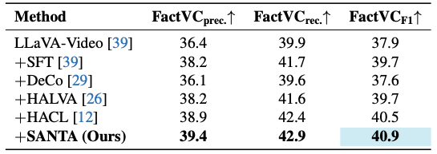
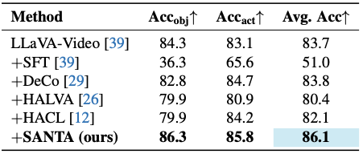
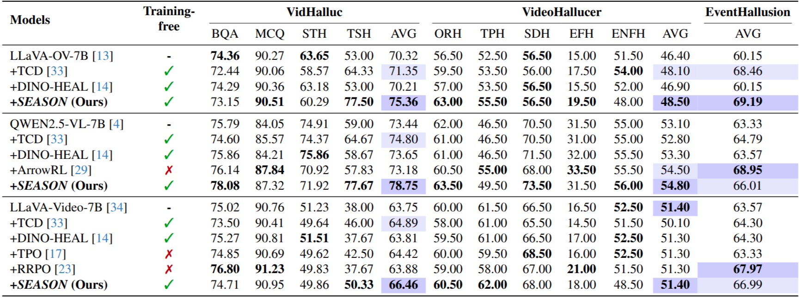
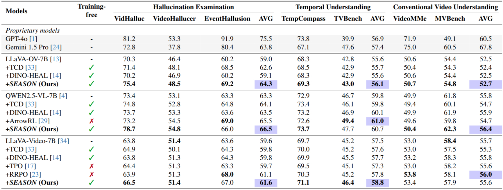

Video Large Language Models (VideoLLMs) have shown remarkable progress in video understanding. However, these models still struggle to effectively perceive and exploit rich temporal information in videos when responding to user queries. Therefore, they often generate descriptions of events that are temporal inconsistent or causally implausible, causing severe hallucination issues. While most prior studies have focused on spatial hallucinations (e.g. object mismatches), temporal reasoning in video understanding remains relatively underexplored. To address this issue, we propose Self-Diagnostic Contrastive Decoding (SEASON), a training-free method that adaptively enhances temporal and spatial faithfulness for each output token. It achieves this by dynamically diagnosing each token's hallucination tendency and applying adaptive contrastive decoding against its corresponding temporal and spatial negatives. Extensive experiments demonstrate that SEASON outperforms all existing training-free hallucination mitigation approaches on three hallucination examination benchmarks, while further improves VideoLLMs across four general video understanding benchmarks.
Overview of SEASON. Given the input video \(V\) and the question \(Q\), our proposed SEASON contrasts the original video representations \(v^O\) against our introduced spatial \(v^S\) and temporal \(v^T\) negatives to jointly achieve temporal and spatial faithfulness. Specifically, we design \(v^T\) via the proposed "Temporal Homogenization", focusing on introducing temporal ambiguity while preserving spatial semantics. The "Self-Diagnostic Mechanism" computes token-level adaptive weights \(W^S, W^T\) by measuring attention divergence, dynamically steering the final decoding to penalize spatial or temporal hallucinations.
Quantitative comparisons with hallucination mitigation methods on video captioning using FactVC.
Quantitative evaluation of both object and action hallucinations on video question answering using VidHal.
Evaluation of multiple hallucination examination benchmarks with different VideoLLMs as backbones. Bold marks the best per group; highlights indicate the top two benchmark results.
Performance comparisons on benchmarks for hallucination examination, temporal, and conventional video understanding. Different VideoLLMs are applied as backbones. Bold marks the best per group; highlights indicate the best benchmark results.
Qualitative visualization of SEASON's self-diagnostic mechanism. Qualitative visualization of SEASON's self-diagnostic weights (\(W^T\) and \(W^S\)). In the generated text (the x-axis in the line plot), blue tokens are identified as relying on visual temporal cues; SEASON thus contrasts them against the temporal negative (\(v^T\)) to ensure token-level temporal faithfulness. For instance, tokens critical for temporal ordering like "B" (in (a)), as well as "A" and "first" ((in (b))) clearly receive high temporal weights (\(W^T\)) to ensure the sequence is correct. On the other hand, orange tokens rely on visual spatial cues and are contrasted against the spatial negative (\(v^S\)). This is evident as tokens describing objects and interactions, such as "placing butter...mixing bowl" in (a) and "hand...swirl batter" in (b), are assigned high spatial weights (\(W^S\)). Both (a) and (b) are samples from Vidhalluc.